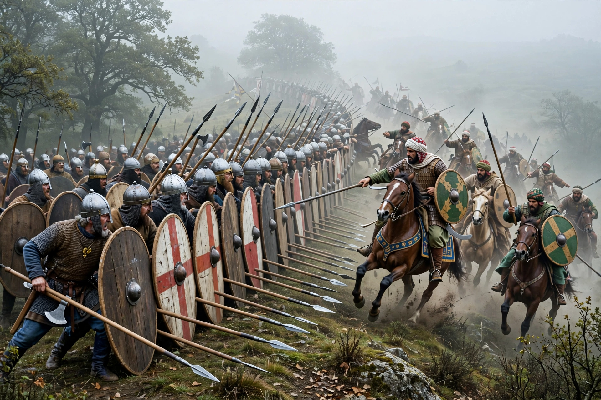

Battle of Tours

The Battle of Tours, also called the Battle of Poitiers, was fought on 10 October 732 between Frankish and Burgundian forces under Charles Martel and an invading army of the Umayyad Caliphate led by Abdul Rahman Al Ghafiqi, the governor of al-Andalus. It took place in north-central France, between the cities of Tours and Poitiers, near the village of Moussais-la-Bataille.
| Date | 10 October 732 |
|---|---|
| Location | Near Tours, France |
| Result | Decisive Frankish victory |
| Belligerents | Kingdom of the Franks; Duchy of Aquitaine — Umayyad Caliphate |
| Commanders | Charles Martel; Odo of Aquitaine — Abdul Rahman Al Ghafiqi † |
Background
Umayyad forces had conquered the Iberian Peninsula and crossed the Pyrenees, defeating Duke Odo of Aquitaine at the Battle of the River Garonne in 732 and sacking Bordeaux. Odo appealed to Charles Martel, the Frankish mayor of the palace, who assembled an army and marched south to intercept the raiding force as it advanced toward the wealthy Abbey of Saint-Martin at Tours.
The battle
For several days the armies skirmished while Charles held a defensive position on high, wooded ground. The Frankish infantry formed a dense shield wall and withstood repeated Umayyad cavalry charges — later chroniclers compared the Franks to a wall of ice. During the fighting, reports that Frankish scouts were plundering the Umayyad camp, where the spoils of Bordeaux were kept, drew part of the Muslim cavalry back; in the confusion Abdul Rahman was killed while trying to rally his men, and the Umayyad army withdrew southward during the night.
Aftermath and significance
The victory halted the Umayyad advance north of the Pyrenees and consolidated Charles Martel's power, laying foundations for the Carolingian dynasty founded by his son Pepin the Short. Historians have long debated the battle's significance: Gibbon famously imagined Oxford teaching the Qur'an had Charles lost, while modern scholars tend to see the engagement as a large raid repelled rather than a full-scale invasion defeated, though still a turning point in the balance of power in Western Europe.